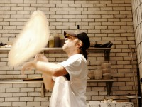
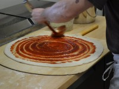

Randy’s Pizza is the best New York-style pizza in the Triangle area, as touted by the Durham Herald-Sun, as well as numerous customers. We opened our first location in 1995, and we now have eight locations in Durham, Morrisville, Cary, and Raleigh.
The restaurant is known for its large slices and offers pizzas ranging in size from 14 inches to our newest offering, a 30-inch pizza. We recommend the 30-inch pizza for families and large parties. Customers enjoy much more than just pizza. We offer a diverse menu of pasta, salads, sandwiches, and wings. Additionally, we offer a great catering menu for corporate events, family parties, and any occasion.
Randy’s is dedicated to the quality of our food. We prepare our dough daily and acquire the freshest and finest ingredients. Our pizzas are made on stone brick ovens. Each location is open seven days a week serving lunch and dinner.
Pizza has undergone a very slow process of evolution over the centuries, but it is quite certainly the cultures of the Mediterranean that deserve credit for creating it. Historical records suggest that people in ancient Egypt, Greece and Rome all ate things that are very similar to our modern pizza crust. Ancient Egyptians had a custom of celebrating the Pharaoh’s birthday with a flat bread seasoned with herbs, and Herodotus, a Greek historian described Babylonian recipes that are very similar to contemporary pizza crust. The word pizza may be a derivative of the Latin word picea, a word which the Romans used to describe the blackening of bread in an oven.
PREDECESSORS OF PIZZA IN THE MIDDLE AGES
Pizza most clearly took the form that we are now familiar with in pre-Renaissance Naples, a large city in central Italy. Poor peasants used their limited ingredients (wheat flour, olive oil, lard, cheese and natural herbs) to make a seasoned, flat bread garnished with cheese. Mozzarella cheese was one benefit of an invasion from Asian peoples, who brought the water buffalo to Italy. Today, the best mozzarella cheese is still made from water buffalo milk.
The word pizza,, as it is currently spelled, also emerged some time in the Middle Ages. It was used to describe both sweet and salty pies that were becoming increasingly popular among Italian aristocracy.
THE FEARED AMERICAN TOMATO
Europeans returning from Peru and Mexico brought with them what was originally thought to be a very poisonous fruit: the tomato. Precisely how they decided that the tomato was actually edible is unclear, but as Southern Europeans overcame their suspicions, the tomato became enormously popular. Today, of course, the tomato is a crucial component of Mediterranean cuisine, and is still used in most pizza recipes.
NAPLES BECOMES THE PIZZA CAPITOL OF THE WORLD
Naples gradually assumed its reputation as having the finest pizza in Italy throughout the 17th and 18th centuries. In the 19th century, pizza became a popular fast food.
Before pizzerias became very popular, however, street vendors (typically young boys) walked around the city with small tin stoves on their heads, calling out to attract customers. While undoubtedly uncomfortable for these 19th-century delivery boys, this street-vending method made pizza ever-more popular, and paved the way for the opening of the world’s first pizzeria.
The world’s first true pizzeria, “Antica Pizzeria Port’Alba”, opened in 1830 and is still in business today at Via Port’Alba 18 in Naples. Pizzerias in this era usually included a large brick oven, a marble counter where the crust was prepared, and a shelf lined with ingredients. Contemporary Neapolitan pizzerias are prepared in the same way they were 100 years ago. The large brick ovens make the pizzerias uncomfortably hot in every season except winter, but the unique flavor of these brick-oven pizzas is unmatched. Pizzaioli (makers of pizza) often assemble the entire pizza on a marble counter right before the customer’s eyes.
Some writers have considered the pizza an invention of the man who is responsible for making it an international phenomenon (but the fact that this man worked in a pizzeria makes it difficult to call him the father of pizza!). In 1889, Rafaele Esposito of the Pizzeria di Pietro e Basta Cosi (now called Pizzeria Brandi) baked pizza especially for the visit of King Umberto I and Queen Margherita. To make the pizza a little more patriotic-looking, Esposito used red tomato sauce, white mozzarella cheese and green basil leaves as toppings. Queen Margherita loved the pizza, and what eventually became Pizza Margherita has since become an international standard. Pizzeria Brandi, now more than 200 years old, still proudly displays a royal thank-you note signed by Galli Camillo, “head of the table of the royal household”, dated June 1889.
Neapolitan pizza is still widely regarded as the best in the world, probably because of the fresh ingredients available to Neapolitan pizzerias: herbs, garlic, and tomatoes grown in the rich volcanic ash of Vesuvius, and fresh mozzarella from water buffalo milk.
Today, the Associazione Verace Pizza Napoletana (the Association of True Neapolitan Pizza) maintains strict member guidelines for ingredients, dough, and cooking. This elite organization maintains that pizza dough must be made only with flour, natural yeast or brewers yeast, salt and water. Dough must be kneaded by hand or mixers which do not cause the dough to overheat, and the dough must be punched down and shaped by hand. Also, only wood-burning, bell-shaped brick ovens are permitted in pizzerias that belong to this organization. The pizza must be cooked on the surface of the oven (often made of volcanic stone), and not in any pan or container, with oven temperatures reaching at least 400-430° C (750-800° F). These ovens often have to heat up for hours before the first pizza is cooked.